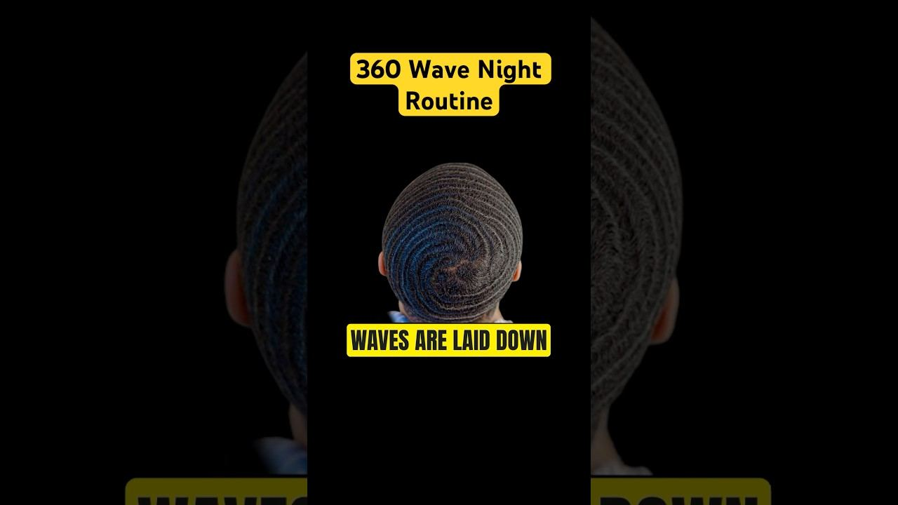

The Nighttime Routine for Waves: 10 Minutes That Protect 24 Hours
Waves are built during the day and kept — or lost — at night. Eight hours against a pillow is the longest your hair spends anywhere, in the roughest conditions, with zero supervision. A deliberate night routine is what makes those hours work for your pattern instead of against it. WavemanJ (@wavemanj14) runs a quick nightly routine in the video below that takes about ten minutes; this guide breaks down each step and the reasoning, so you can adapt it to your own pattern and schedule.
Step 1: The night brush session
Brush before bed, every night, no exceptions — five to ten minutes is enough for maintenance; longer if you are building or wolfing. The night session re-lays everything the day disturbed: wind, hats, hands in your hair, life. You are sending your hair into its longest compression window in the exact directions you want it to memorise.
Brush in your fixed section order with correct angles, and finish with a soft pass. If you only have energy for one real session a day, make it this one — the session immediately before compression is worth more than the same session followed by hours uncovered.
Step 2: Moisture check and the tie
Feel your hair before you tie. Dry hair under a durag all night wakes up brittle and frizzy; a pea-sized amount of moisturiser or a few drops of oil, worked in by hand in pattern directions, keeps it pliable through the night. If your hair still feels damp from an evening wash, that is fine too — damp plus compression is the wash-day formula.
Tie seam-out, edge level, knot small at the back, flap smooth. Then the optional pro move: a wave cap over the durag. On restless nights, the cap is the insurance policy that keeps the tie where you left it. Double compression is standard practice among serious wavers for exactly this reason.
Step 3: The pillow factor
Cotton pillowcases are rough and thirsty — they grip hair, pull at the tie, and drink the moisture you just applied. A satin or silk pillowcase lets the durag glide instead of catching, which means your tie survives turns that would drag it off on cotton. It is a one-time purchase that pays out every single night.
If you wake and the durag has shifted, do not just push it back — untie, quick brush to reset, retie. Sixty seconds. The pattern you save is your own, and the morning-after fix costs far less than the week of repair a slept-in bad tie creates.
Watch: Quick & Easy 360 Wave Night Routine (10Min/ Day)
Video: “Quick & Easy 360 Wave Night Routine (10Min/ Day)” by WavemanJ (@wavemanj14) · Watch on YouTube
Shop the gear
Everything in this guide runs on the right gear: a durag that holds compression without slipping, a cap that stays put, and fabric that treats your hair right. The durag.store launch lineup is built to that standard — dual-layer construction, long tails, and stitching made to survive the routine. Join the launch list and use code GOLDSTANDARD for 15% off your first order.
Keep learning
- The Morning Routine for Waves: Untie, Lift, and Go — Intermediate · Routines
- Waves at the Gym: Training Hard Without Losing the Pattern — Basic · Routines
- Waves at Work: Dress Codes, Professional Looks, and the Durag Question — Basic · Routines
Sources: Video — “Quick & Easy 360 Wave Night Routine (10Min/ Day)” by WavemanJ (@wavemanj14), youtube.com. Guide written by the durag.store Wave Lab.